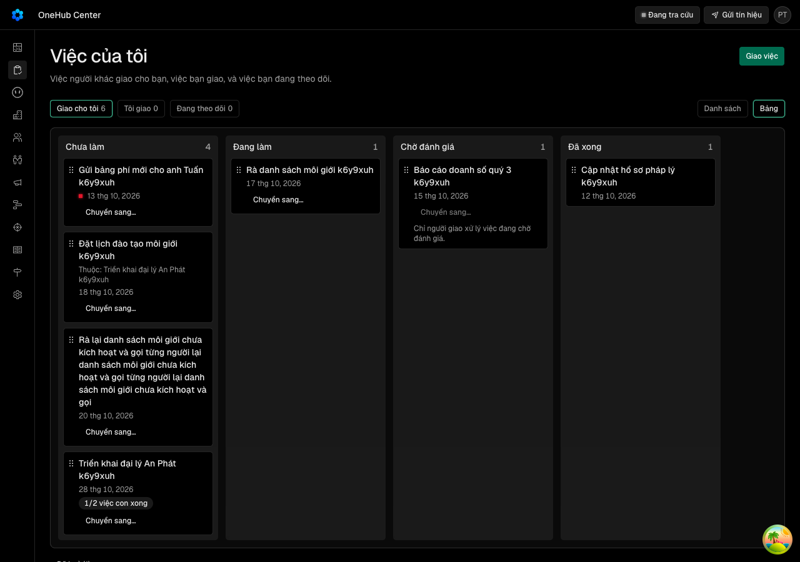

Kanban là cách xem phổ biến nhất của việc; việc con trả lời luôn lượt «bước có việc con» đang chờ của kế hoạch 30 ngày.
docs/superpowers/specs/2026-10-13-kanban-viec-design.md
| Eval | Tiêu chí | Loại | Verdict | run_id | verified_at |
|---|---|---|---|---|---|
| E1 | AC-1 | test | PASS | minted-kanban-viec-E1-r3 | 2026-10-13T18:09:07Z |
| E1b | AC-1 | test | PASS | minted-kanban-viec-E1b-r3 | 2026-10-13T18:09:07Z |
| E2 | AC-2 | test | PASS | minted-kanban-viec-E2-r1 | 2026-10-13T17:12:46Z |
| E3 | AC-3 | test | PASS | minted-kanban-viec-E3-r1 | 2026-10-13T17:12:46Z |
| E4 | AC-4 | test | PASS | minted-kanban-viec-E4-r3 | 2026-10-13T18:09:07Z |
| E4b | AC-4 | test | PASS | minted-kanban-viec-E4b-r3 | 2026-10-13T18:09:07Z |
| E5 | AC-5 | test | PASS | minted-kanban-viec-E5-r1 | 2026-10-13T17:12:46Z |
| E6 | AC-6 | test | PASS | minted-kanban-viec-E6-r1 | 2026-10-13T17:12:46Z |
| E6b | AC-6 | test | PASS | minted-kanban-viec-E6b-r3 | 2026-10-13T18:09:07Z |
| E7 | AC-7 | test | PASS | minted-kanban-viec-E7-r1 | 2026-10-13T17:12:46Z |
| E7b | AC-7 | test | PASS | minted-kanban-viec-E7b-r3 | 2026-10-13T18:09:07Z |
| E8 | AC-8 | test | PASS | minted-kanban-viec-E8-r1 | 2026-10-13T17:12:46Z |
| E9 | AC-9 | test | PASS | minted-kanban-viec-E9-r1 | 2026-10-13T17:12:46Z |
| E9b | AC-9 | test | PASS | minted-kanban-viec-E9b-r3 | 2026-10-13T18:09:07Z |
| E10 | AC-10 | test | PASS | minted-kanban-viec-E10-r1 | 2026-10-13T17:12:46Z |
| E11 | AC-11 | ui-check | PASS | minted-kanban-viec-E11-r1 | 2026-10-13T17:12:46Z |
| E11b | AC-11 | script | PASS | minted-kanban-viec-E11b-r1 | 2026-10-13T17:12:46Z |
| E12 | AC-12 | judgment | PASS (ĐỀ XUẤT CỦA HỘI ĐỒNG, CHỜ NGƯỜI CHỐT) | — | — |
| E15 | AC-3 | script | PASS | minted-kanban-viec-E15-r1 | 2026-10-13T17:12:46Z |
AC-1: Given B là người thực hiện của việc ở mỗi trạng thái Chưa làm, Đang làm, Chờ đánh giá, một việc Xong hôm qua, một việc Xong 10 ngày trước và một việc Huỷ, When B mở Việc của tôi và chọn «Kiểu xem: Bảng», Then đường dẫn mang `xemViec=bang` cạnh `nhomViec`, bảng có đúng bốn cột theo thứ tự Chưa làm · Đang làm · Chờ đánh giá · Xong với số đếm, cột Xong có việc Xong hôm qua mà không có việc Xong 10 ngày trước và cuối cột có dòng dẫn sang kiểu Danh sách nêu số việc Xong còn lại, việc Huỷ chỉ nằm trong dòng gập «Đã huỷ (1)» dưới bảng; When tải lại trang, Then vẫn ở kiểu Bảng và cùng nhóm; When máy tải chậm, tải hỏng hay không có việc nào, Then màn hiện đúng ST-bang-viec-cho-tai, ST-bang-viec-loi (có «Thử lại»), ST-bang-viec-rong và tiêu đề trang giữ nguyên.
test-run: dropped crm_mv6zx0y9s5b0_test
AC-1: Given B là người thực hiện của việc ở mỗi trạng thái Chưa làm, Đang làm, Chờ đánh giá, một việc Xong hôm qua, một việc Xong 10 ngày trước và một việc Huỷ, When B mở Việc của tôi và chọn «Kiểu xem: Bảng», Then đường dẫn mang `xemViec=bang` cạnh `nhomViec`, bảng có đúng bốn cột theo thứ tự Chưa làm · Đang làm · Chờ đánh giá · Xong với số đếm, cột Xong có việc Xong hôm qua mà không có việc Xong 10 ngày trước và cuối cột có dòng dẫn sang kiểu Danh sách nêu số việc Xong còn lại, việc Huỷ chỉ nằm trong dòng gập «Đã huỷ (1)» dưới bảng; When tải lại trang, Then vẫn ở kiểu Bảng và cùng nhóm; When máy tải chậm, tải hỏng hay không có việc nào, Then màn hiện đúng ST-bang-viec-cho-tai, ST-bang-viec-loi (có «Thử lại»), ST-bang-viec-rong và tiêu đề trang giữ nguyên.
Ran 4 tests across 1 file. [1048.00ms]
AC-2: (cross-layer) Given B là người thực hiện của việc V ở «Chưa làm» gắn thoả thuận D, When B kéo thẻ V sang cột «Đang làm» trên bảng ở 1280, Then thẻ nằm ở cột Đang làm, số đếm hai cột đổi, và đọc lại từ cơ sở dữ liệu V có trạng thái «Đang làm», `roiChuaLamLuc` đã ghi, đúng một dòng vết `doi-trang-thai` của B có trước «Chưa làm», sau «Đang làm» và nguồn `bang-keo`; When B chọn «Chuyển sang… › Gửi đánh giá» trên thẻ V, Then V sang «Chờ đánh giá» với một dòng vết nguồn `bang-menu`.
AC-3: Given một việc có người giao A, người thực hiện B, người theo dõi W, When từng người A, B, W, một thành viên khác X và một quản trị Q gọi lệnh kéo `viec.keo` cho từng cặp trong 20 cặp nguồn × đích (5 × 20 = 100 ô), Then kết quả từng ô trùng đúng kết quả của lệnh đổi trạng thái của DA1 trên cùng ô — thành công, 400 «Không chuyển được việc từ … sang …», hay 403 với cùng lời ghim; ô bị từ chối không ghi vết và không ghi khoá thứ tự nào; và `chuyenDuoc` mà `viec.bang` trả là đúng tập đích thành công của hàng đó ở 12 hàng đọc được trên bảng — A ở nhóm «Tôi giao», B ở «Giao cho tôi», W ở «Đang theo dõi», mỗi người × bốn trạng thái có cột (X, Q và trạng thái Huỷ không lên bảng nên chỉ đo bằng ma trận 100 ô của `viec.keo`).
AC-4: Given bảng của B có việc V ở «Chờ đánh giá» (B là người thực hiện, A là người giao), When B nhấc thẻ V, Then cột «Xong» và «Đang làm» hiện mờ (không nhận), thả vào đó thì thẻ về chỗ cũ và không có lệnh nào tới máy chủ; When B mở menu «Chuyển sang…» của V, Then menu không có mục nào và nút ở trạng thái khoá với một dòng nói chỉ người giao xử lý việc chờ đánh giá; When B xem nhóm «Đang theo dõi», Then thẻ không có tay kéo và không có nút menu; When B dùng bàn phím (Tab tới tay kéo, Space, mũi tên phải, Space) trên một việc «Chưa làm», Then việc sang «Đang làm» với vết nguồn `bang-keo`; When màn rộng 375, Then trang không cuộn ngang, bảng cuộn ngang trong khung của nó và menu «Chuyển sang…» đổi được trạng thái.
Ran 9 tests across 1 file. [1229.00ms]
AC-4: Given bảng của B có việc V ở «Chờ đánh giá» (B là người thực hiện, A là người giao), When B nhấc thẻ V, Then cột «Xong» và «Đang làm» hiện mờ (không nhận), thả vào đó thì thẻ về chỗ cũ và không có lệnh nào tới máy chủ; When B mở menu «Chuyển sang…» của V, Then menu không có mục nào và nút ở trạng thái khoá với một dòng nói chỉ người giao xử lý việc chờ đánh giá; When B xem nhóm «Đang theo dõi», Then thẻ không có tay kéo và không có nút menu; When B dùng bàn phím (Tab tới tay kéo, Space, mũi tên phải, Space) trên một việc «Chưa làm», Then việc sang «Đang làm» với vết nguồn `bang-keo`; When màn rộng 375, Then trang không cuộn ngang, bảng cuộn ngang trong khung của nó và menu «Chuyển sang…» đổi được trạng thái.
Ran 3 tests across 1 file. [1.63s]
AC-5: (cross-layer) Given cột «Chưa làm» trên bảng của B có ba việc V1, V2, V3 xếp theo hạn, và A (người giao cả ba) cũng xem cùng ba việc ở nhóm «Tôi giao», When B kéo V3 lên đầu cột rồi tải lại, Then bảng của B xếp V3, V1, V2, còn bảng của A giữ thứ tự cũ; đọc lại từ cơ sở dữ liệu có ba khoá thứ tự của B, không dòng vết nào mới, và V3 vẫn xoá được nếu trước đó chưa có lịch sử; When một việc mới giao cho B, Then nó đứng đầu cột Chưa làm; When hai lần chèn vào cùng một khe giữa hai việc, Then hai khoá khác nhau và thứ tự đọc lại đúng thứ tự chèn.
AC-6: (cross-layer) Given B kéo V từ «Chưa làm» sang «Đang làm» trong lúc A (người giao) vừa huỷ V, When máy chủ trả 400 «Không chuyển được việc từ «Huỷ» sang «Đang làm».», Then thẻ về cột cũ rồi biến khỏi bảng sau khi tải lại (V nay ở dòng gập «Đã huỷ»), toast đọc nguyên lời máy chủ, không có dòng vết nào của B; When mạng hỏng giữa lúc thả, Then thẻ về chỗ cũ và toast có «Thử lại».
AC-6: (cross-layer) Given B kéo V từ «Chưa làm» sang «Đang làm» trong lúc A (người giao) vừa huỷ V, When máy chủ trả 400 «Không chuyển được việc từ «Huỷ» sang «Đang làm».», Then thẻ về cột cũ rồi biến khỏi bảng sau khi tải lại (V nay ở dòng gập «Đã huỷ»), toast đọc nguyên lời máy chủ, không có dòng vết nào của B; When mạng hỏng giữa lúc thả, Then thẻ về chỗ cũ và toast có «Thử lại».
Ran 3 tests across 1 file. [1468.00ms]
AC-7: (cross-layer) Given việc cha P gắn thoả thuận D, người giao A, người thực hiện B, When B mở khung P, bấm «Thêm việc con», gõ tiêu đề, chọn người thực hiện C và hạn, bấm «Thêm», Then đọc lại từ cơ sở dữ liệu có đúng một việc mới K với `chaId` = P, người giao B, người thực hiện C, trạng thái «Chưa làm», gắn D, người theo dõi gồm A (B đã là người giao nên không thêm), và P có một dòng vết `them-viec-con` mang tiêu đề K; mục «Việc con (0/1)» của khung P liệt kê K; K hiện trên bảng của C ở cột «Chưa làm» với dòng «Thuộc: <tiêu đề P>»; thẻ P trên bảng của B có «0/1 việc con xong»; When thêm hỏng, Then lỗi hiện dưới nút và chữ đã gõ còn nguyên.
AC-7: (cross-layer) Given việc cha P gắn thoả thuận D, người giao A, người thực hiện B, When B mở khung P, bấm «Thêm việc con», gõ tiêu đề, chọn người thực hiện C và hạn, bấm «Thêm», Then đọc lại từ cơ sở dữ liệu có đúng một việc mới K với `chaId` = P, người giao B, người thực hiện C, trạng thái «Chưa làm», gắn D, người theo dõi gồm A (B đã là người giao nên không thêm), và P có một dòng vết `them-viec-con` mang tiêu đề K; mục «Việc con (0/1)» của khung P liệt kê K; K hiện trên bảng của C ở cột «Chưa làm» với dòng «Thuộc: <tiêu đề P>»; thẻ P trên bảng của B có «0/1 việc con xong»; When thêm hỏng, Then lỗi hiện dưới nút và chữ đã gõ còn nguyên.
Ran 3 tests across 1 file. [1479.00ms]
AC-8: Given việc cha P và việc con K của AC-7, When ai đó gọi `viec.taoCon` với cha là K, Then 400 «Việc con không có việc con.»; When người theo dõi W hay thành viên khác X thêm con cho P, Then 403 «Chỉ người giao và người thực hiện được thêm việc con.»; When một người không thấy P (P là việc riêng) gọi, Then 404 cùng lời «Không có việc nào mang mã …»; When chọn người thực hiện mang vai `okr` cho con của P gắn đối tác, Then 400 có tên họ và chữ «chỉ OKR», không hàng hay vết nào được ghi; When P đã Xong hay Huỷ, Then 400 «Chỉ thêm việc con cho việc đang mở.»; When người giao xoá P, Then 409 vì P đã có lịch sử; khung K có dòng «Thuộc việc: <P>» và không có nút «Thêm việc con»; Given P2 là việc riêng (không gắn gì) với người giao A, người thực hiện B, When B thêm con K2 cho C, Then A thấy K2 qua `viec.get` và trong nhóm «Đang theo dõi», còn thành viên X không trong cuộc nhận «Không có việc nào mang mã …» khi đọc K2.
AC-9: (cross-layer) Given P có ba con K1 (Xong), K2 (Đang làm), K3 (Huỷ), When B mở bảng, Then thẻ P ghi «1/2 việc con xong» (không tính việc Huỷ); When B kéo P sang cột «Xong», Then hộp hỏi lại «Việc này còn 1 việc con chưa xong. Vẫn đánh dấu xong?» hiện; When bấm thôi, Then P ở cột cũ và không có dòng vết mới; When đồng ý, Then P «Xong», K2 vẫn «Đang làm», K1 và K3 không đổi; When B chọn «Chuyển sang… › Đánh dấu xong» trên thẻ P, hay bấm «Xong» trong khung P, lúc còn con mở, Then cùng hộp hỏi lại hiện trước khi có lệnh nào tới máy chủ; When A bấm «Huỷ» trong khung P lúc còn con mở, Then hộp hỏi lại tương tự với chữ «Vẫn huỷ?».
AC-9: (cross-layer) Given P có ba con K1 (Xong), K2 (Đang làm), K3 (Huỷ), When B mở bảng, Then thẻ P ghi «1/2 việc con xong» (không tính việc Huỷ); When B kéo P sang cột «Xong», Then hộp hỏi lại «Việc này còn 1 việc con chưa xong. Vẫn đánh dấu xong?» hiện; When bấm thôi, Then P ở cột cũ và không có dòng vết mới; When đồng ý, Then P «Xong», K2 vẫn «Đang làm», K1 và K3 không đổi; When B chọn «Chuyển sang… › Đánh dấu xong» trên thẻ P, hay bấm «Xong» trong khung P, lúc còn con mở, Then cùng hộp hỏi lại hiện trước khi có lệnh nào tới máy chủ; When A bấm «Huỷ» trong khung P lúc còn con mở, Then hộp hỏi lại tương tự với chữ «Vẫn huỷ?».
Ran 2 tests across 1 file. [2.24s]
AC-10: Given kho mẫu sau `bun run db:seed`, When chạy `rang/do-nguong.mjs` với khoảng ngày bao trọn dữ liệu mẫu, Then thước in đúng đáp án đã khai trong `rang/dap-an.json` cho `doiTrangThaiNguoi`, `quaBangKeo`, `quaBangMenu`, `tiLeBangKeo`, `tiLeBang`, `viecCoCon`, `nguoiTaoCon`, không ghi gì vào cơ sở dữ liệu (số hàng mọi bảng việc trước và sau bằng nhau); dữ liệu mẫu có một việc cha gắn thoả thuận mẫu với ba con tạo qua đường ghi thật.
AC-11: (ui-observed) Given bản chạy thật có dữ liệu mẫu, When chụp Việc của tôi kiểu Bảng ở 1280 và 375, khung việc cha có mục Việc con, khung việc con, menu «Chuyển sang…» đang mở và hộp hỏi lại đóng cha, Then mỗi ảnh khớp bảng trạng thái của design doc (ST-bang-viec-co-viec, ST-bang-viec-menu, ST-bang-viec-hoi-dong-cha, ST-bang-viec-dien-thoai, ST-khung-viec-con, ST-khung-viec-la-con): bốn cột có số, thẻ có hạn và «x/y việc con xong», ở 375 không cuộn ngang trang.

AC-11: (ui-observed) Given bản chạy thật có dữ liệu mẫu, When chụp Việc của tôi kiểu Bảng ở 1280 và 375, khung việc cha có mục Việc con, khung việc con, menu «Chuyển sang…» đang mở và hộp hỏi lại đóng cha, Then mỗi ảnh khớp bảng trạng thái của design doc (ST-bang-viec-co-viec, ST-bang-viec-menu, ST-bang-viec-hoi-dong-cha, ST-bang-viec-dien-thoai, ST-khung-viec-con, ST-khung-viec-la-con): bốn cột có số, thẻ có hạn và «x/y việc con xong», ở 375 không cuộn ngang trang.
AC-12: Given `CONTEXT.md` và `docs/api.md`, When đọc mục «Việc», Then `CONTEXT.md` có mục «Việc con» (một tầng, mang gắn của cha, người của cha thành người theo dõi, không tự đóng theo cha) và câu «Bảng» trong mục «Việc của tôi»; `docs/api.md` mục «Việc» nêu `viec.bang`, `viec.keo`, `viec.taoCon`, thứ tự riêng từng người không ghi vết, hai nguồn `bang-keo` và `bang-menu`.
Phán đoán: đề xuất PASS của hội đồng, mang từ round 2; chỉ là ý kiến tư vấn, người chốt ở Cổng 2.
AC-3: Given một việc có người giao A, người thực hiện B, người theo dõi W, When từng người A, B, W, một thành viên khác X và một quản trị Q gọi lệnh kéo `viec.keo` cho từng cặp trong 20 cặp nguồn × đích (5 × 20 = 100 ô), Then kết quả từng ô trùng đúng kết quả của lệnh đổi trạng thái của DA1 trên cùng ô — thành công, 400 «Không chuyển được việc từ … sang …», hay 403 với cùng lời ghim; ô bị từ chối không ghi vết và không ghi khoá thứ tự nào; và `chuyenDuoc` mà `viec.bang` trả là đúng tập đích thành công của hàng đó ở 12 hàng đọc được trên bảng — A ở nhóm «Tôi giao», B ở «Giao cho tôi», W ở «Đang theo dõi», mỗi người × bốn trạng thái có cột (X, Q và trạng thái Huỷ không lên bảng nên chỉ đo bằng ma trận 100 ô của `viec.keo`).
| Khối | Tác tử | Token đầu ra |
|---|---|---|
| S4 round 1 | 39 | 70.009 |
| S4 round 2 | 24 | 38.158 |
| S4 round 3 | 20 | 27.278 |
3 lượt chấm · tổng 135.445 token
chưa gộp vào onehub (nhánh production kho khai)